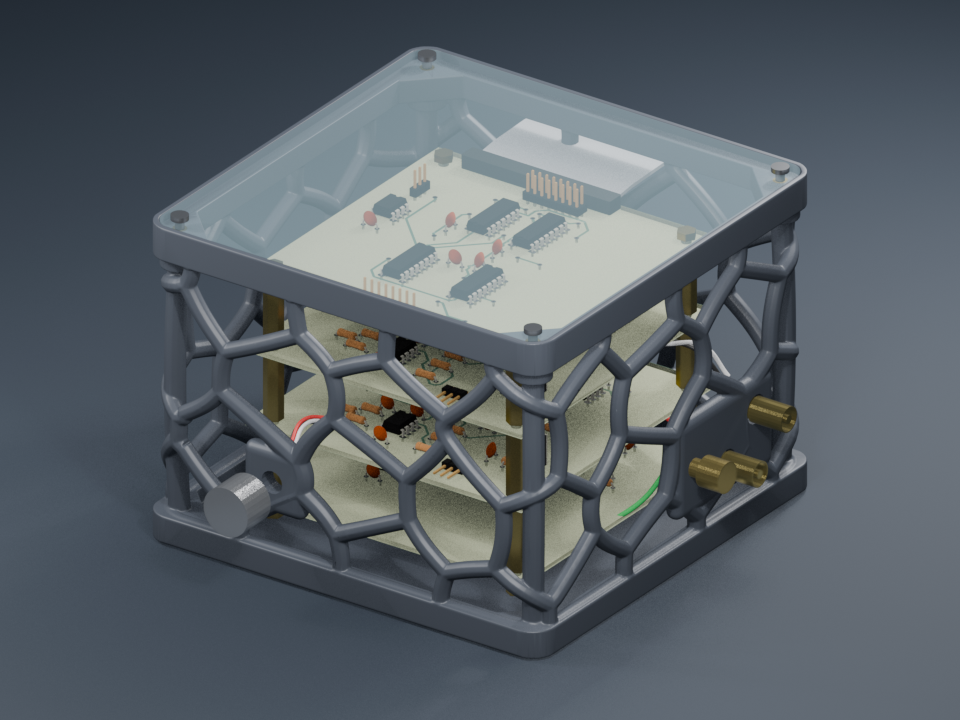
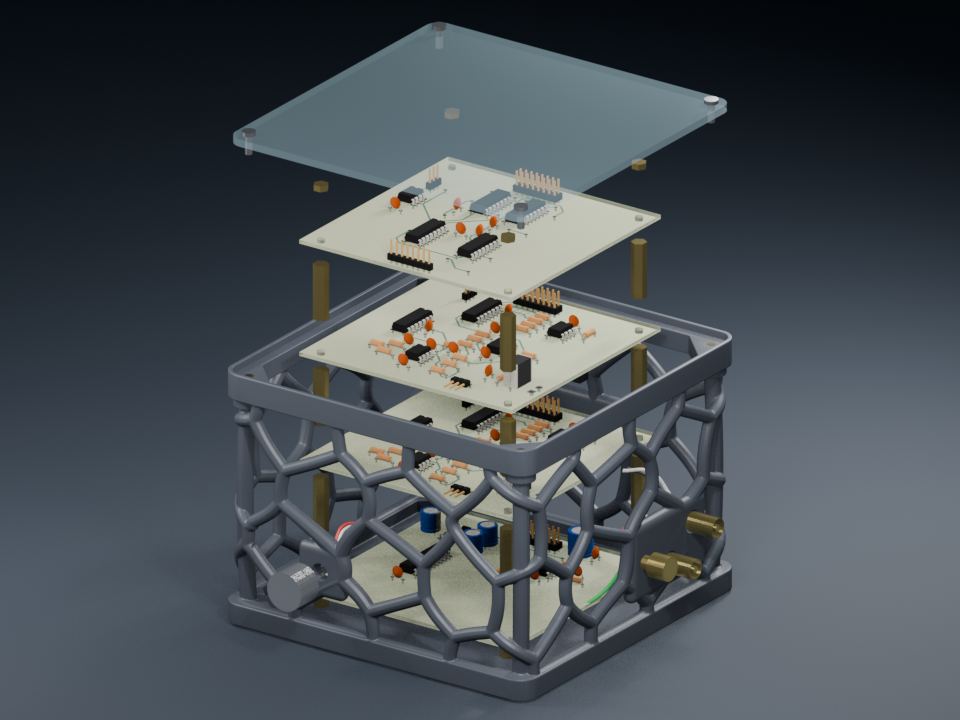
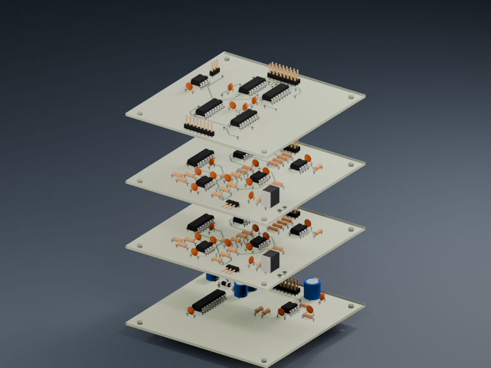

Three six-second GIFs of the printable organic lattice enclosure. Print files and instructions

Open branches, reinforced connector islands and a removable acrylic lid.
Download GIFMP4 fallback
A 105 mm shell with 40 mm of added height; the illustrated board spacing is not a measurement of the physical stack.
Download GIFMP4 fallback
Power, right channel, left channel and digital interface, from bottom to top.
Download GIFMP4 fallback